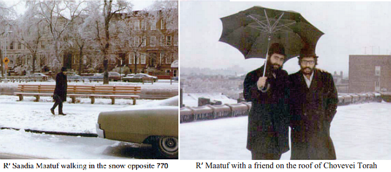

A Warm Winter Teives with the Rebbe
The weather in the month of Teives 5734 was unusually cold, but inside 770 there was a fiery flame of Chassidus and hiskashrus. * What happened when the author of the diary went outside in the snowy street, and how did the Rebbe react to the suggestion of walking in the gutter because the snow on the sidewalk had turned to dangerous ice? Why did the Rebbe ask for a translator to be present at the yechidus with the Brazilian businessman, and why did the Rebbe advise him to stay in business? Who did the Rebbe tell to buy gifts for his wife and children, and how did the Rebbe come to contribute to the costs of the plane ticket? * Fascinating reports and memories from the month of Teives 5734 with the Rebbe, published for the very first time from the diary of the late R’ Saadia Maatuf.

NOT EVERYONE GETS A DOLLAR
Eve of 1 Teives, 7th Night of Chanuka
After Maariv, R’ Dovid Raskin announced in the name of the Rebbe that whoever would participate in mivtza Chanuka tomorrow, would receive a dollar from the Rebbe at 9:30 tomorrow night. After the davening, the Rebbe signaled to R’ Chadakov that he should come up to the Rebbe’s room, and afterward he came out and said that the Rebbe said that anyone over bar-mitzva could already participate.
[In the previous installment, the author indicated that Israeli bachurim had been forbidden from participating, apparently due to concerns over keeping the study schedule. In the wake of the direct instruction from the Rebbe, the author writes]: We were already in a state of preparedness, because what had been going on until now was difficult. There were many Israelis [who tried to go despite the rules] who don’t speak English and were forced to disembark [from the buses going to mivtzaim]. We will see what happens tomorrow. One thing that I forgot to note is that R’ Raskin said that everyone must register with those in charge, because whoever just goes on his own without approval has no chance of receiving the dollar from the Rebbe.
Wednesday, 1 Teives, Day, & 8th Night of Chanuka
Due to the announcement of last night, they put up signs today saying that there would be eight buses going to mivtza Chanuka, in order to enable everyone to receive the dollar of the Rebbe. Sadly, the buses arrived late, and as each one arrived, everyone immediately charged and boarded the bus. Levi Yitzchok Bruk and Yoske Gopin were in charge of maintaining order, and they saw to it that there would be a balance between English speakers and Hebrew speakers.
Meanwhile it rained nonstop. I managed to get on the second bus, which took us to the Bronx. I went together with a student from [the baal teshuva yeshiva in Crown Heights] Hadar HaTorah.
We got back to 770 before Maariv, and after davening Maariv I went to light Chanuka candles, eat supper, and then to the mikva, since the Rebbe would be giving out the dollars tonight. From the mikva, I returned to 770.
When the Rebbe gave out the dollars, they passed out a short questionnaire which asked things like: to how many people did you give menorahs. We stood with this paper on a long line to get approved by Rabbi Dovid Raskin for having participated in the mivtza. Without his approval, we could not get a dollar from the Rebbe. In order to avoid congestion, they appointed a few bachurim who wrote down the names and gave out the approvals in R’ Raskin’s name. The line was very long and because of the rain outside, the line wound around downstairs in the shul.
The Rebbe began giving out dollars, at first to women who participated in the mivtza. After half an hour, there was a recess. At 9:40 the Rebbe stood in the doorway of his room, holding a stack of new dollars, and began giving them out. When Rabbi JJ Hecht went over, the Rebbe told him that he really deserved more than one dollar, but a good mother does not differentiate between her children … When Rabbi Gershon Jacobson [editor of the Algemeiner Journal] passed by, the Rebbe asked him, “What did you do? [for mivtza Chanuka].” He said he put the Rebbe’s letter into the paper. The Rebbe asked him, “and what will you do tomorrow?” He said, “Tomorrow I will sell it.” The Rebbe smiled and gave him a dollar.
Despite the long line, the distribution took place quickly and the Rebbe finished at 11. At 11:45 he went out to the car and we began singing “Al Nisecha.” The Rebbe motioned with his hand and we sang more vigorously. The Rebbe entered his car and we danced until the car passed the traffic light.
THE CHANUKA LIGHTS WERE LIT EVEN AFTER CHANUKA
Thursday, 2 Teives
Shacharis. At the Torah reading, when the Rebbe approached the Torah, there was a small page from the siddur on the floor and the Rebbe motioned to it. Yosef Gul who was standing nearby immediately picked it up.
Today we went on mivtza Chanuka [mainly to give out the Rebbe’s letter about Chanuka and to put tefillin on with people]. I went with Yisroelik Zalmanov and Shmuel Mordechai Hildesheim. We went to Jewish stores and helped two Jews put on tefillin. Then we went to a huge sports arena where there were many Jews with whom we put on tefillin.
We returned to 770 and made it to the children’s rally that took place downstairs in the big zal. They divided the zal in half, with boys on one side and girls on the other side and the bima in the center. The counselors spoke to the children, and there were clowns and raffles and it was nice.
The Rebbe sent out a note which asked that they have the big menorah that they brought for the children continue to be lit during the farbrengen [which was actually taking place after Chanuka]. R’ Groner announced that there would be a farbrengen at 6:45. Right after the children’s rally they began setting up the bima and tables for the farbrengen. In the meantime, the Rebbe came in for Mincha.
After Mincha, the bachurim went to eat supper when suddenly, R’ Chadakov entered the big zal. Everyone thought Maariv would take place right then, but R’ Groner said Maariv would take place in ten minutes. In the next ten minutes we managed to eat and get back before Maariv began.
The farbrengen began at 6:50 and it was very joyous. The Rebbe said that all those who went on mivtza Chanuka should say l’chaim and the Rebbe twice motioned to whistle, once between sichos and once at the end of the farbrengen. I whistled until my mouth hurt. At the end of the farbrengen the Rebbe told one of the “Russians” to sing “Slozhba Nasha” [“Who Knows One” in Russian] and began the first stanza. Apparently, because there was no time, the Rebbe told him to sing the last stanza while the Rebbe encouraged the singing with his hand motions as he sat in his place. Then the Rebbe began “Nyet, Nyet,” and said a bracha acharona.
After going up to his room, we waited outside until the Rebbe came out and went home. R’ Chadakov was also in the car. The car was escorted by a police car. This time too, we blocked the service road and stopped traffic until the Rebbe passed. While in the car, the Rebbe encouraged us with hand motions.
From the beginning of Chanuka, I received letters from my brother Sholom and my brother-in-law Ovadia and from Menachem [Sameach], but because I was busy with mivtza Chanuka, I did not find the time to respond. If I had a free moment, I sat and wrote in my diary. G-d willing, bli neder, I will soon respond to all of them.
Friday, 3 Teives
There is a chance that tomorrow there will be a farbrengen since this is the Shabbos after Chanuka, and especially in light of the activities of mivtza Chanuka.
THE CHILD SUDDENLY APPROACHED THE REBBE
Shabbos, Parshas VaYigash, 4 Teives
There was a very joyous farbrengen today. While they were singing, the Rebbe nodded along with his head while remaining seated. In the sichos, he only alluded to the law of “Who is a Jew,” but did not discuss it at length. The Rebbe also did not mention the elections [for the Knesset, which were to be held on 6 Teives – SZB]. I understood the Rashi sicha well, including the answers [despite limited knowledge of Yiddish], and with Hashem’s help, will write up the sicha and send it to my brother Moshe [in the Holy Land]. The Rebbe gave cake and a bottle of wine to R’ Dovid Raskin for the gathering of Lubavitch Youth to be held tonight, and also gave a bottle of mashke to one of Anash, and l’chaim to his son who became bar mitzva. This time, the farbrengen ended early, at 4 pm, and he immediately began to sing “Nyet, Nyet.” While saying the blessings, he nodded [along to the singing] with his head.
After the farbrengen, he descended from the platform to daven Mincha. At the conclusion of the davening, he again began to sing “Nyet, Nyet,” and went up to his room. We immediately ran outside, since the Rebbe would be leaving to his house. After a brief time, he left his room as everyone was standing around singing, which the Rebbe encouraged with his hand motions, and he set off for home with us following behind as usual. There was a light rain as we walked, but obviously we continued to follow the Rebbe. As we were walking, a small boy lunged out from his house towards the Rebbe, and extended his hand to the Rebbe. The Rebbe shook his hand with a smile. We then returned to have the Shabbos meal from whatever leftovers were around, and we hurried since the Rebbe would be returning soon for Maariv.
After Maariv, the Rebbe remained in his room for longer than usual, and we waited until he came out.
At about 10 pm, there was a farbrengen held by Lubavitch Youth, and R’ Mentlick read the letter of the Rebbe [apparently, the letter from Chanuka] with all of the footnoted sources, and R’ Dovid Raskin distributed the mezonos and wine that he received from the Rebbe.
Sunday, 5 Teives
The Rebbe received people for yechidus this evening. Those who came out from yechidus had nothing extraordinary to recount. At night, I went to do some work at the Vaad L’Hafatzos Sichos, together with Avraham Chazan.
Tuesday, 7 Teives
Today, when the Rebbe came out for Mincha, there was a poor collector standing at the doorway of the small zal. When the Rebbe took out money to give him tz’daka, a coin fell to the floor and the Rebbe bent down to pick it up. The secretary, R’ Klein, who was standing off to the side, wanted to pick up the coin, but he was too late.
Friday, 10 Teives, Fast Day
During the Slichos, they sang “Rachamana D’anei” and “Avinu Malkeinu.” Mincha was in the small zal at 2 pm, and the Rebbe was called up for Maftir and read the Haftora. It was extremely crowded, but we heard the Haftora clearly.
Shabbos, Parshas VaYechi, 11 Teives
[Due to the fast, the time for Kabbalas Shabbos was moved up]: At about 5:30, the Rebbe came downstairs for Kabbalas Shabbos. After the davening, he went up to his room but did not stay there very long; he just took his coat and left immediately towards home.
There were many “shalom zachors” this Shabbos, six in all. To our disappointment, there was no farbrengen. After Maariv on Motzaei Shabbos, the moon could not be seen clearly. Despite that, they originally thought that the Rebbe would come out for Kiddush Levana, and they had already prepared to arrange everything accordingly, but a while later they announced that the Rebbe would not be coming out. There were some who dispersed, but suddenly R’ Chadakov came outside to see the moon, and he announced that the Rebbe would indeed come out. We immediately all stood to attention, and the Rebbe came out. I stood very close to the Rebbe, and was concerned that perhaps the Rebbe would turn to me to say “Shalom Aleichem,” but in the end the Rebbe said it to someone standing closer to him. At the conclusion, he shook out the edges of his tallis katan, and then went to his room and left for home a short while later.
THE PORTUGUESE TRANSLATOR IN YECHIDUS
Sunday, 12 Teives
Today, the Rebbe came out for the funeral procession for one of Anash.
Tonight, people went in for yechidus. Among those who went in was Menachem Applebaum. After he came out, the secretary, R’ Klein, suddenly asked that he be called back. It turned out that one of the people who had come in was from Brazil and spoke only Portuguese, and the Rebbe asked for a translator to come in. By divine providence, Applebaum was still in the zal downstairs, writing down what the Rebbe said to him during the yechidus.
Applebaum went inside once again, this time as a translator. Afterward, he recounted that the man who spoke only Portuguese was a businessman who now wanted to become a lawyer, and he asked the Rebbe if he should go now and study this profession. The Rebbe answered him that since in his current occupation as a businessman, he is able to bestow kindnesses upon many Jews, and if he will be a lawyer he would only help a few people, therefore it was better for him to remain in the business world. The Rebbe also told him that just as people produce machines in order to be able to accomplish more things with them, so Hashem created you in order that you should do good for many Jews.
Afterward, Applebaum told about how, as he was translating the Rebbe’s words for the man, the Rebbe listened in and kept checking if he was translating correctly or not. This made it obvious that the Rebbe understood this language. If so, why didn’t the Rebbe speak to the man without a translator? His answer was, “That is already a matter of the Rebbe.”
Monday, 13 Teives
During the Torah reading, I stood directly opposite the Rebbe. When they began the reading, the shliach tzibbur was standing next to the Torah reader. Then he received an aliya, so the place he had been standing in remained empty. Suddenly, the Rebbe signaled with his finger, and since I was standing the closest, I approached a bit and bent down to see if perhaps something had fallen on the floor. Next to me was standing Dovid Malka, and he also approached, and then we both stepped back. It was then that Dovid Malka spotted the empty space and went to stand there until the end of the reading. The Rebbe received the third aliya. Since I was standing close by, I was honored with raising the Torah, and I felt strongly overcome with emotion. I approached with love and awe, and did the raising of the Torah.
Wednesday, 15 Teives
The Rebbe went to the Ohel as is customary on the 15th of every month. This time he went early, at 11 am. He returned at 6:30 pm, and then they davened Mincha.
Friday, 17 Teives
When the Rebbe was being driven home, there was a large truck in the road [the service road outside 770] which was blocking traffic, and the Rebbe’s car could not proceed. They (R’ Binyomin Klein, and some say it was a group of bachurim) then approached the policeman stationed outside, and told him that the Rebbe could not get home. The officer drove in reverse with flashing lights, followed by the Rebbe’s car going in reverse with its lights flashing.
Shabbos Parshas Shmos, 18 Teives
Shabbos passed in usual fashion, without there being a farbrengen.
On Motzaei Shabbos, before the Rebbe went home, they cleared the path of snow. They worked with shovels and spread salt, since the snow had begun to melt and then refroze, and there was a real danger of slipping.
GIFTS FOR THE WIFE AND CHILDREN
Sunday, 19 Teives
Tonight, Berger traveled back to the Holy Land [see box – SZB]. I forgot to record that he told how when he went into yechidus, the Rebbe told him to buy gifts for his wife and children, and the Rebbe also told him that he would help towards the cost of the ticket. In the end, I heard that the Rebbe helped him with 1000 lira.
Wednesday, 22 Teives
This morning, the Rebbe went to the mikva and we thought that meant that he would go to the Ohel, but he did not end up going. During Mincha, somebody was standing and saying Shmoneh Esrei opposite the place where the Rebbe sits [in the small zal], and therefore the Rebbe remained standing during the entire repetition by the shliach tzibbur.
Thursday, 23 Teives
At 2:30 pm, he went to the Ohel. We thought that there would be a farbrengen in honor of 24 Teives, the hilula of the Alter Rebbe, but there was no farbrengen.
PATH IN THE SNOW
Shabbos, Parshas VaEira, 25 Teives, Shabbos Mevarchim Shvat
In the morning, the street was covered with ice and it was a real danger to walk on the street. When I left the apartment, I didn’t have a chance to think about how to navigate the ice, as I quickly found myself lying on the ground. I tried to stop my fall, but was unsuccessful and slipped down all of the steps. Other friends like me also fell, and there was no sense of “the suffering of the many is half a consolation.” There were those who were seriously hurt. One bachur from Argentina broke his hand, and one of Anash fell and suffered a skull fracture. It was literally life threatening outside.
When the Rebbe exited from his house, he stood in the doorway with the Rebbetzin at his side. Outside, there were three bachurim already waiting to accompany the Rebbe; Brod, Yarmush, and one other bachur. The Rebbetzin called to them and said that they should tell the Rebbe to walk only in the gutter, since the cars had already softened up the snow. They told this to the Rebbe, and the Rebbe began to walk in the gutter, but it quickly became clear that this was not easy to do, so the Rebbe went back to the sidewalk. The bachurim walked very close to the Rebbe [as opposed to the normal walking a bit behind] the entire time. They felt like every moment they were going to expire, as the Rebbe walked slowly and occasionally slipped a bit. Shifrin [apparently, R’ Hershel Shifrin] who saw the Rebbe on the way, approached and suggested that it was worthwhile to go in the gutter, but the Rebbe responded to him, “Without hispaalus [emotional excitement],” and continued walking on the sidewalk as Shifrin walked in front, in order to find easier places to step. That is how they walked all the way to 770. Elyakim Wolf was standing at the steps of 770, and the Rebbe put his hand on his shoulder and leaned on him until they got to the entrance of 770.
This Shabbos, there was a farbrengen. The Rebbe spoke about “Who is a Jew,” and said that the Mafdal [Mizrachi party] was putting a face on it as if the lack of amending the “Law of Return” would prevent them from joining the next coalition government, but the deal is already signed and sealed that they do agree to join even without it [which later proved itself to be the case].
The Rebbe gave cake and a bottle of mashke to R’ Dovid Raskin for the chanukas habayis in honor of the grand opening of the new library in the hall of the Lubavitch Youth Organization. The new hall is also supposed to be used for the “Pegisha with Chabad” program for students, and for lectures [apparently referring to the Levi Yitzchok Library on Kingston Ave]. The Rebbe also encouraged people to participate in this event.
Sunday, 26 Teives
Today, there was a funeral procession for a woman from the Holy Land [Rebbetzin Leah Karasik, the widow of R’ Eliezer Karasik]. They say that she was walking on the snow on Shabbos and fell, and they are saying that she passed away from this [she slipped and suffered a severe blow, returned to the home of her family in Crown Heights, where she sat and said T’hillim. While she was still holding the T’hillim in her hand, she returned her soul to its Maker].
She arrived here before Tishrei, and had remained here until now. The Rebbe went outside to the funeral. The funeral went from 770 to the airport, since she is to be buried in the Holy Land.
Tonight, there was the event in honor of the new library of LYO, and there were many guests from outside the community.
“BERGER TRAVELED BACK TO THE HOLY LAND”
Each time that I worked on preparing a portion of the diary of R’ Saadia Maatuf for publication, I could not help but be moved. For this installment, my emotions really spiked when I discovered an entry in the month of Teives that referred to my father, R’ Yaakov Yosef Berger. The following is meant to help complete the picture.
Ever since I was a child, I remember well how every time that my father returned from a trip to 770, he would come bearing gifts, and we all knew that it was based on a directive from the Rebbe that he was told while in 770, to buy a gift for his wife. I just discovered this in the diary of R’ Maatuf, where it is also recounted that the Rebbe contributed to the cost of his ticket.
After clarifying some of the details, here is how the events unfolded:
During Tishrei 5734, my parents planned to travel together to 770, and to leave their oldest child, my brother R’ Nochum Berger, by the grandparents. However, due to the outbreak of the Yom Kippur War, the trip was pushed off, and my father ended up traveling alone for 19 Kislev. During that period, the oil boycott of the Arab nations against the West was leading to ever more severe shortages, and as a result, the air travel system in those countries was becoming increasingly chaotic and suffered serious harm. Due to those conditions, my father was stuck the entire night of 19 Kislev in the airport in London. It was only the next day that he was able to continue the next leg of his flight to New York, and he arrived in 770 only a half hour before Shabbos.
In those days, there were hardly any Israeli Lubavitchers in 770, both due to the general mobilization and the fact that the army was not giving out exit permits. Only my father and one other Chassid managed to arrive from the Holy Land to be by the Rebbe for 19 Kislev and Chanuka. Various problems cropped up again regarding his return trip, and my father did not manage to purchase a ticket. It was due to these problems that the Rebbe expressed his wish to contribute toward the expenses of the trip. The secretary, R’ Binyomin Klein (apparently directed by the Rebbe), made many calls to the airline in order to arrange a suitable ticket.
When my father went in for yechidus at some point after 10 Teives, he received a siddur as a gift from the Rebbe. During that yechidus, the Rebbe asked him if he had bought a gift for his wife. When he answered in the negative, the Rebbe instructed him to buy her a gift.
Berger. "A Warm Winter Teives with the Rebbe." Beis Moshiach, no. 1099 (December 26, 2017).